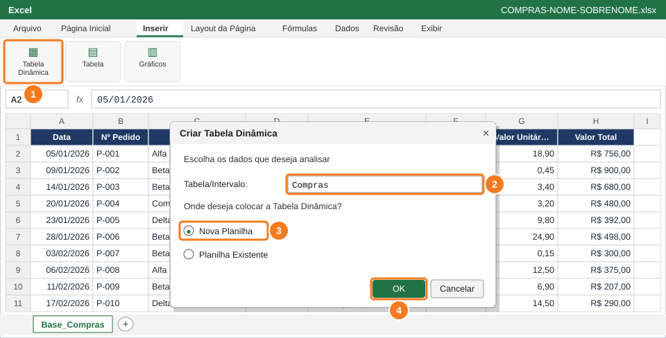
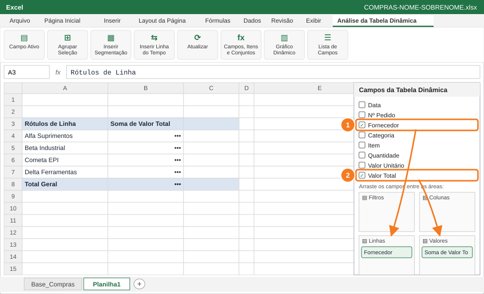
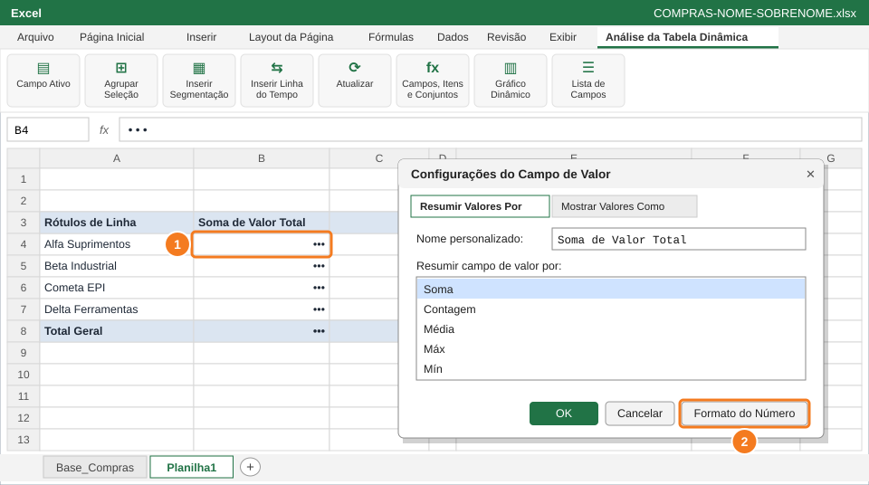
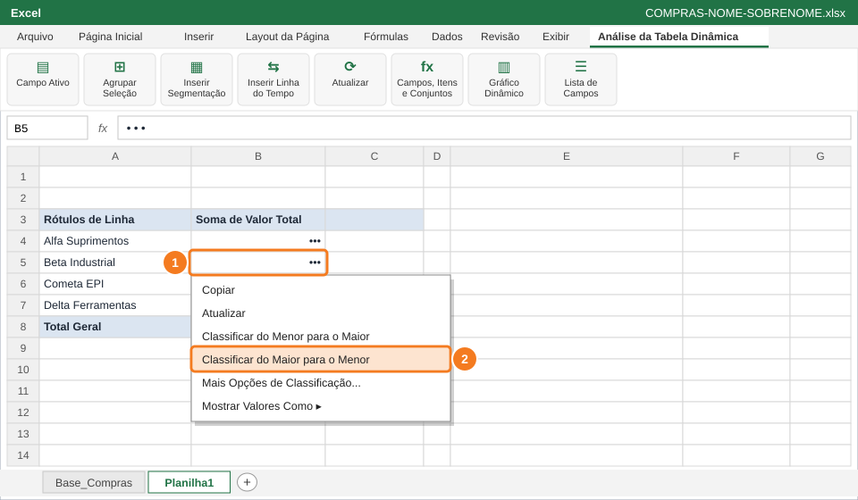
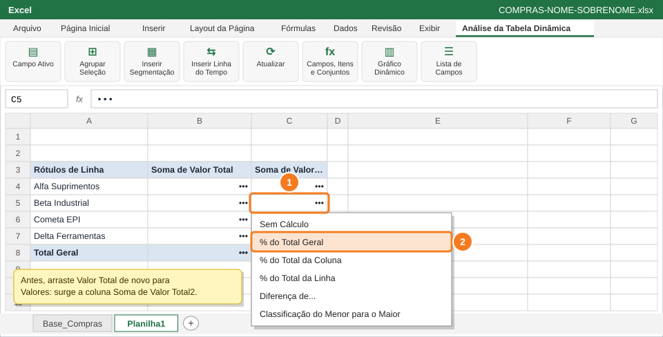
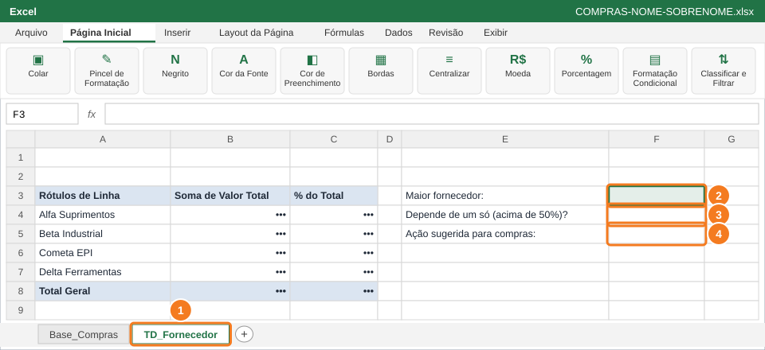

SENAI · Análise de Dados Aplicada à Gestão
Questão 2 — Quanto foi comprado de cada fornecedor?
Atividade Prática de Excel — Análise de Compras com Tabelas Dinâmicas
Atividade prática avaliativa⏱ 30 min2,0 pontos6 passos
Nome:
Turma:
Data: 01/10/2026
🎯 O que você vai fazer
Criar a primeira tabela dinâmica para responder ao gerente: quanto foi comprado de cada fornecedor e se a empresa depende demais de um só.
Você vai usar
- Inserir → Tabela Dinâmica
- Painel Campos da Tabela Dinâmica (Linhas e Valores)
- Configurações do Campo de Valor
- Classificar
- Mostrar Valores Como → % do Total Geral
Aba de trabalho: TD_Fornecedor (nova) · Slides de apoio: Arquivo 6 — slides 8, 10–14, 16 e 21.1
1
Insira a tabela dinâmica numa nova planilha

Inserir → Tabela Dinâmica (1), tabela Compras (2), Nova Planilha (3) e OK (4).
Copia só os dados da tabela (sem fórmulas nem formatação).
2
Arraste Fornecedor para Linhas e Valor Total para Valores

Fornecedor (1) vai para Linhas e Valor Total (2) vai para Valores.
3
Mostre os valores em reais

Botão direito num valor (1) → Configurações do Campo de Valor → Formato do Número (2).
4
Ordene do maior para o menor

Botão direito num valor (1) → Classificar → do Maior para o Menor (2).
5
Mostre a participação de cada fornecedor em %

Botão direito na nova coluna de valores (1) → Mostrar Valores Como → % do Total Geral (2).
6
Renomeie a aba e responda ao gerente

Aba TD_Fornecedor (1) e respostas em F3 (2), F4 (3) e F5 (4).
📋 Como esta questão será avaliada
| Critério | Pontos |
|---|
| Tabela dinâmica com Fornecedor em Linhas e Soma de Valor Total | 0,6 |
| Valores em Moeda e ordenados do maior para o menor | 0,4 |
| Coluna % do Total Geral | 0,5 |
| Respostas em F3, F4 e F5 coerentes com os dados | 0,5 |
| Total da questão | 2,0 |